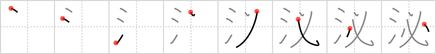

泌
← →
ooze

Reading:
On-Yomi: ヒツ、ヒ
Heisig story:
Water . . . the invariably divided heart.
Koohii stories:
1) [rizzo] 22-10-2005(234): Anything full of water will invariably begin to ooze.
2) [DrJones] 22-12-2007(85): When you pierce a heart with a stake, it invariably oozes blood.
3) [thegeelonghellswan] 21-9-2008(29): The invariably divided heart is… oozing water? Is it crying because it is broken?
4) [lee101] 19-8-2010(15): Heisig, your a great man. Don't let people tell you overwise. Don't let them get you down ok?
5) [nath04] 19-8-2009(10): When you divide Michael Phelps' heart, water oozes out instead of blood.